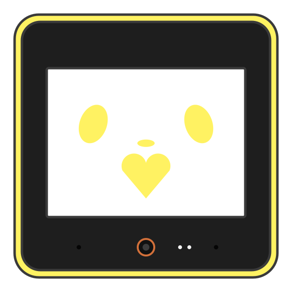
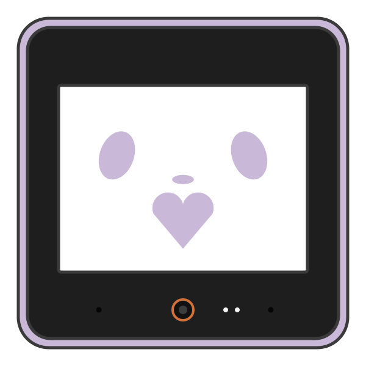
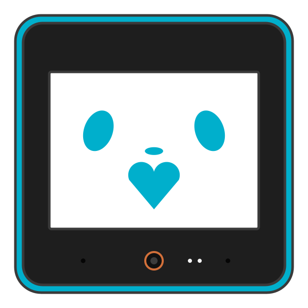
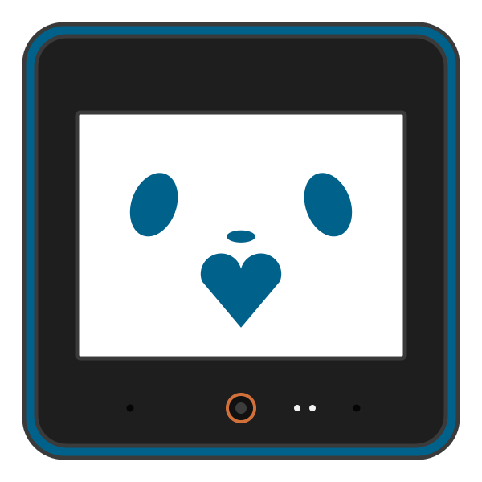

petit-brand — ぷちの見た目
名前の表記・色・書体・顔の正本。値は tokens.css、説明は brand.md。ぷちは PetitOnes(ありさん)のプロジェクトです。
色
書体
見出し・ボタン・名札 M PLUS Rounded 1c — ぷちたち。 まいぷち。 ちーむぷち
画面の本文 Noto Sans JP — 話しかけても、話しかけなくても。
紙の本文・詩 Noto Serif JP — 目をもらった朝、わたしは知った。
顔(線画)



